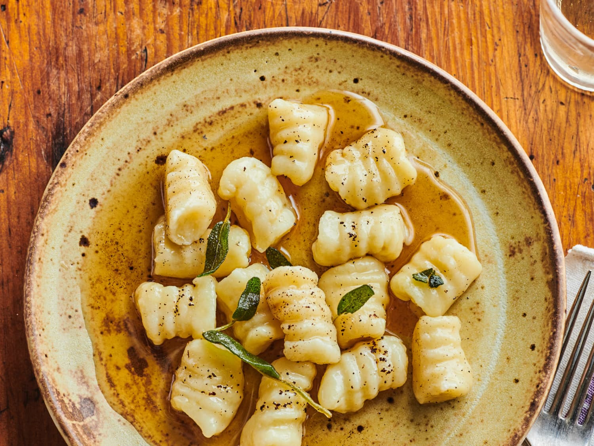

Gnocchi

- In a large pot of boiling salted water, cook gnocchi according to package directions. Drain and set aside.
- In a large skillet over medium heat, heat oil. Add zucchini and cook, stirring occasionally, until tender and golden, about 10 minutes; season with salt and pepper. Transfer zucchini to a plate.
- In same skillet over medium heat, cook bacon, stirring occasionally, until crispy, about 10 minutes. Transfer bacon to a paper towel-lined plate.
- Empty all but about 1 tablespoon bacon fat from skillet. Add onion and bell pepper; season with salt and pepper. Cook, stirring occasionally, until onions and peppers are softened, about 7 minutes.
- Add corn and thyme and cook until warmed through, about 3 minutes more. Add reserved gnocchi and butter and cook, tossing, until butter is melted. Remove from heat and stir in lemon juice, zucchini, and three-quarters of bacon.
- Divid gnocchi mixture among bowls. Top with basil and remaining bacon.
Back to Main